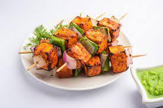

Panner Tikka

Description
Paneer Tikka is a popular and delicious tandoori snack where Paneer
(Indian cottage cheese cubes) are marinated in a spiced yogurt-based
marinade, arranged on skewers and grilled in the oven. Worry not if
you don’t have an oven – instead of grilling in oven, you can make
Paneer Tikka Recipe on stovetop on a tawa/skillet. In this post I am
sharing both the oven and stovetop methods.
Ingredients
- Panner
- Red Bell Papers
- Green Bell Papers
- Yellow Bell Papers
- Onion
- Garlic
- Tomato
- Coriander
- Lemon
- Hung Curd
Steps
- Cut Panner Cubes And vegetables
- Prepare Masala For Panner
- Soak Panner and vegetables in Masala
- Leave the mixture in fridge for 5 to 10 minutes
- Put masala coated paneer and vegetables on skewers
- Take out the paneer tikka from the tandoor